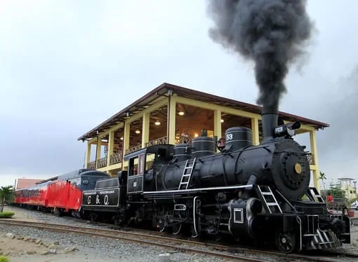
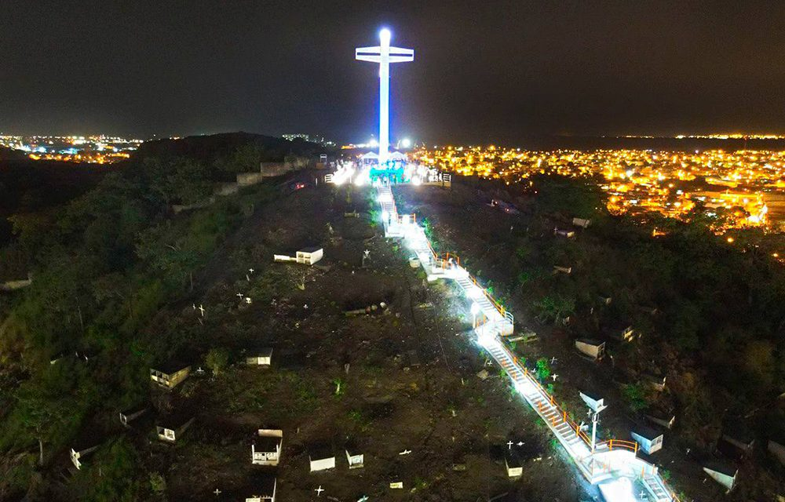
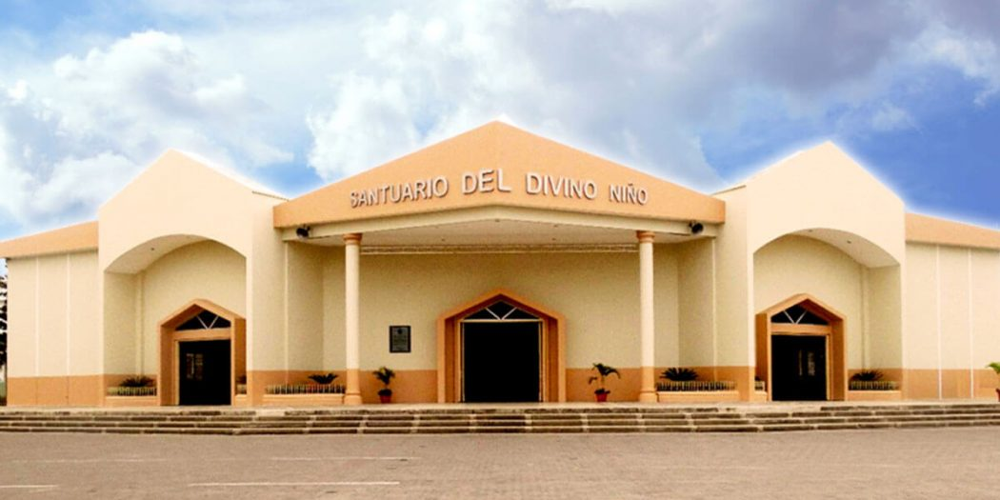
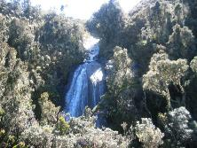
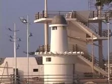
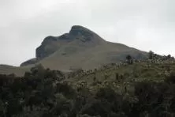
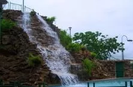
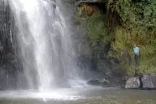

Durán se prepara para celebrar 107 años de fundación
Vino desde Loja, su tierra natal, precisamente a Durán para ofrecer membrillos y otros dulces elaborados con panela, leche y maní. Su puesto, una carpa de tela, era uno de los 20 armados junto a un mercado céntrico del cantón, pertenecientes a vendedores que recorren localidades en días festivos.
Ella es Rosa Guamán, quien antes del mediodía de ayer ya vendía sus productos a escolares de esta ciudad ubicada frente a Guayaquil, y que cumplirá mañana 107 años de creación.
La llegada de comerciantes, entre ellos también la riobambeña Delia Cujano, marcó un ambiente festivo.
En la mañana, hubo un desfile estudiantil por la zona del Secap, donde participaron alumnos de escuelas del cantón, entre ellas Durán School, con su banda de música.

Durán vive
A estos se suman los actos organizados por el Municipio local que arrancarán mañana a las 09:00, en que está prevista una parada militar por las principales calles de la localidad.
Luego, en el malecón de la ciudadela Roberto Gilbert se desarrollará la sesión solemne conmemorativa, que presidirá el alcalde Dalton Narváez Mendieta.
En la noche, según la programación del Cabildo, se efectuarán bailes populares en el centro de la ciudad y en las ciudadelas El Recreo, Primavera 2 y 16 de Octubre. Además, juegos pirotécnicos en el Malecón Central y en el María Piedad, a las 20:00.

Durán
Está ubicado en el margen oriental del río Guayas, frente a la ciudad de Guayaquil, a la que está unida por el puente de la Unidad Nacional. El cantón Durán tiene tres parroquias: Eloy Alfaro, Divino Niño y El Recreo. Según datos oficiales del INEC según censo 2010, el cantón tiene 315.724 habitante

Reseña
Según el arqueólogo e historiador Guayaquileño don Emilio Estrada Ycaza, expresó que en el actual territorio del cantón Durán, se estableció parte de la cultura Tejar – Daule que perteneció al período de Desarrollo Regional de nuestra prehistoria ( 500 A.C. a 500 D.C), para el intercambio comercial y comunicación se utilizó como vías de navegación de lo que era el río Papayo a sí como otro que existió en las faldas del cerro Las Cabras, intercambiaron con los Huancavilcas, Punáes, los de la Milagro – Quevedo y parte de la Chorrera, de un suelo muy fértil dedicados a la agricultura, la pesca, la cría de aves de corral.
Luego de transcurrir este importante periodo, que dejo asentadas las bases para ver lo que hoy es nuestro cantón. Podemos manifestar que recién a partir de 1880 en Durán comienzan a asentarse gran cantidad de viviendas especialmente campesinas, en las faldas del Cerro las Cabras pertenecientes a familias humildes, venidas de muchos rincones del país atraídas por la cercanía y el comercio que se podía obtener con la ciudad Huancavilca de Guayaquil, con el transcurrir de los años y mediante Ordenanza Municipal fue nombrada Parroquia Rural del Cantón Guayaquil, esto aconteció el Jueves 16 de Octubre de 1902, luego fue ratificado en el año 1920 el 5 de Junio por el Consejo del Guayas, recibiendo el nombre de “Gral. Eloy Alfaro” Durán en homenaje al “Viejo Luchador” debido a su situación vecina con Guayaquil, alcanza un notable desarrollo Agrícola, Industrial y Comercial por lo que ha venido creciendo vertiginosamente, en el año 1985 se formo un comité con personas representativas con la idea de que la parroquia Durán sea elevado a Cantón y es así que el Plenario de las Comisiones Legislativas Permanentes, expidió el decreto de Cantonización el que fue aprobado el 27 de Diciembre de 1985 por el Presidente Constitucional Ing. León Febres Cordero Rivadeneira, y publicado en el Registro Oficial el Viernes 10 de Enero de 1986. A partir de esta fecha nuestro cantón toma su “independencia” administrativa en la que se siembra las esperanza de desarrollo y cambio para nuestro sector.

Lugares
Malecón Dr. Alfredo Palacios
Ubicado en las calles Malecón entre Quito y Yaguachi. El Malecón Alfredo Palacios es un lugar de esparcimiento que cuenta con una maravillosa vista del Rio Guayas y de la ciudad de Guayaquil con sus edificios.
El Malecón cuenta con áreas verdes, áreas peatonales, juegos infantiles, piletas, mirador en forma de barco, un faro, un muelle y la Rotonda. La Rotonda o hemiciclo ferroviario lleva un significado importante de resaltar ya que en ella se encuentran representados dos personajes importantes de nuestra historia, el Gral. García Moreno y el Gral. Eloy Alfaro, quienes fueron los mentalizadores y ejecutores de la obra más grande del país como fue el Ferrocarril.

Malecón Roberto Gilbert-Torre mirador de Guayaquil y Santay
Ubicado en la Cdla. Abel Gilbert 3 (Oeste del Cantón)
El Malecón cuenta con áreas verdes, áreas peatonales, torre de mirador, juegos infantiles, áreas recreativas, pista de patinaje, áreas de contemplación y de descanso apoyadas en espacios públicos como plaza, mirador, glorieta, pérgolas, pileta, puente y senderos y una réplica del tren. Posee un muelle turístico para realizar deportes acuáticos y recorridos turísticos de distracción y avistamiento de la Isla Santay que se encuentra en frente de este hermoso Malecón. Su mirador de tres pisos le brinda al turista la oportunidad de observar un paisaje único.

Parque Ecológico.-Ubicación Cdla. PRIMAVERA 2.
Conocido por sus hermosos jardinesy cascada, contribuye con el ornato de la ciudad y brinda al visitante un espacio de esparcimiento y armonía con la naturaleza. Posee canchas deportivas de futbol y basketball así como también senderos aptos para caminatas así como para realizar ejercicios cardiovasculares.

Feria de Durán
Ubicado en la Av. León Febres Cordero. Concurrencia es masiva, tanto para nacionales como extranjeros. Presentación nocturnas de artistas nacionales y extranjeros. Se encuentran en el mercado local por áreas libres o por pabellones. individuales y colectivos. Se realiza los primeros días de octubre.
